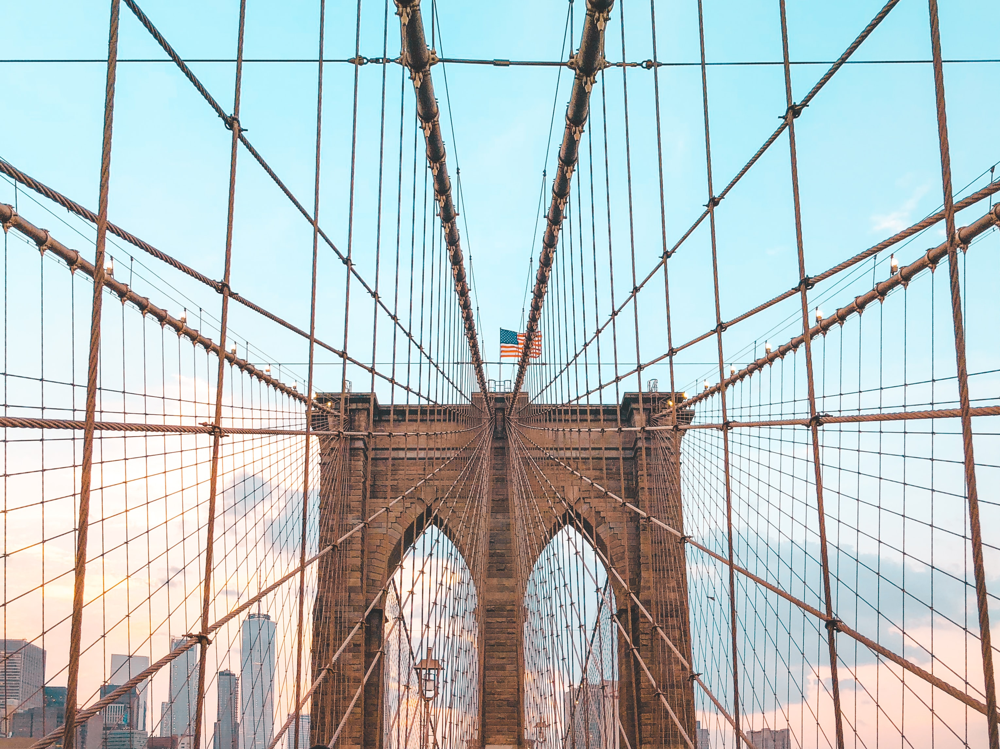

About
The Brooklyn Bridge is a hybrid cable-stayed/suspension bridge i n New York City, spanning the East River between the boroughs of Manhattan and Brooklyn. Opened on May 24, 1883, the Brooklyn Bridge was the first fixed crossing of the East River. It was also the longest suspension bridge in the world at the time of its opening, with a main span of 1,595.5 feet (486.3 m) and a deck 127 ft (38.7 m) above mean high water. The span was originally called the New York and Brooklyn Bridge or the East River Bridge but was officially renamed the Brooklyn Bridge in 1915.
Proposals for a bridge connecting Manhattan and Brooklyn were first made in the early 19th century, which eventually led to the construction of the current span, designed by John A. Roebling. The project's chief engineer, his son Washington Roebling, contributed further design work, assisted by the latter's wife, Emily Warren Roebling. Construction started in 1870, with the Tammany Hall-controlled New York Bridge Company overseeing construction, although numerous controversies and the novelty of the design prolonged the project over thirteen years. Since opening, the Brooklyn Bridge has undergone several reconfigurations, having carried horse-drawn vehicles and elevated railway lines until 1950. To alleviate increasing traffic flows, additional bridges and tunnels were built across the East River. Following gradual deterioration, the Brooklyn Bridge has been renovated several times, including in the 1950s, 1980s, and 2010s.

Planning
Planning
Proposals for a bridge between the then-separate cities of Brooklyn and New York had been suggested as early as 1800.[56][39] At the time, the only travel between the two cities was by a number of ferry lines.[56][57] Engineers presented various designs, such as chain or link bridges, though these were never built because of the difficulties of constructing a high enough fixed-span bridge across the extremely busy East River.[56][39] There were also proposals for tunnels under the East River, but these were considered prohibitively expensive.[58] The current Brooklyn Bridge was conceived by German immigrant John Augustus Roebling in 1852. He had previously designed and constructed shorter suspension bridges, such as Roebling's Delaware Aqueduct in Lackawaxen, Pennsylvania, and the John A. Roebling Suspension Bridge between Cincinnati.
February 1867, the New York State Senate passed a bill that allowed the construction of a suspension bridge from Brooklyn to Manhattan.[60] Two months later, the New York and Brooklyn Bridge Company was incorporated with a board of directors (later converted to a board of trustees).[56][61][62] There were twenty trustees in total: eight each appointed by the mayors of New York and Brooklyn, as well as the mayors of each city and the auditor and comptroller of Brooklyn.[38] The company was tasked with constructing what was then known as the New York and Brooklyn Bridge.[56][61][62] Alternatively, the span was just referred to as the "Brooklyn Bridge", a name originating in a January 25, 1867, letter to the editor sent to the Brooklyn Daily Eagle.[63] The act of incorporation, which became law on April 16, 1867, authorized the cities of New York (now Manhattan) and Brooklyn to subscribe to $5 million in capital stock, which would fund the bridge's construction.